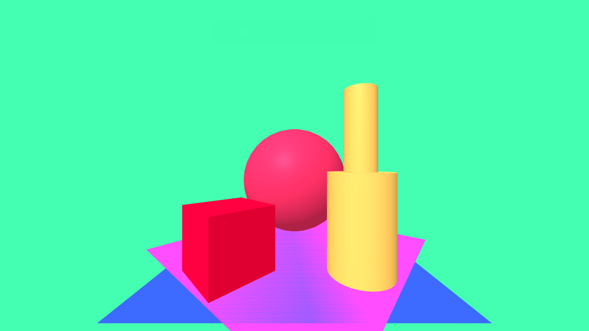
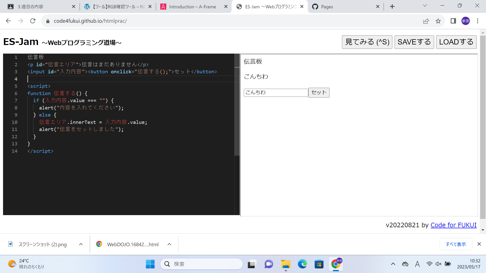

第3週目
3-1 JavaScript体験：VR空間を作る

自作した３次元空間
1.内容
プログラミング道場というサイトで、もともとあったプログラムをコピペして貼り付けて、「見てみる」というボタンを押すだけでボールや箱のある仮想空間を出現させることができた。また、別のサイトで色変更することができた。
2.感想
元々作られていたプログラムを張り付けるだけで仮想空間を作ることができ、簡単だったので安心した。そしてそのプログラムを増やしたり、座標などの値を変えたりするだけで、自由にカスタマイズすることができて、面白かった。色を変えるときは、16進数というのを使って表していると知り、難しそうだと思いました。でもそれも数字を変えるだけでPCが勝手に変えてくれたので、簡単にすることができた。座標を変えたりするときは、値を間違えてしまうと見えなくなってしまうので、そこは注意しないといけないなと思った。
3-2 JavaScript体験：伝言プログラムを作る

伝言板
1.内容
今回もプログラミング道場を使ってプログラムを構成した。初めて1からプログラムを作った。文字を入力して送信と押すだけで伝言を残すことができた。
2.感想
僕にとって初めて最初からプログラムを作るという体験だったので、、とてもワクワクしていた。とても複雑な記号が多くて、最初は少し苦戦した。でも、手順通りにゆっくり作っていくと、なにも戸惑うことなく順調に進めることができた。今回渡された手順は途中までしかできなくて、最後までできなかったので、また、時間があったら作ってみたいなと思いました。一人でやるには、エラーがよく発生したりするらしいので、注意して進めるようにしたいです。
3-3 JavaScriptプログラムの３次元空間の体験
1.内容
前回使ったVRを使用して、先生が作ったプログラムを利用し、実際に自分が3次元空間にいるような体験をした。
2.感想
今回の実習のはじめにプログラムした3次元空間は画面で見ていたけど、これはVRをつけていたので、実際にその中にいるような感覚で体験することができた。最初、この空間までの行きかたが分からなくて少し苦戦したけど、先生に教えてもらいながらたどり着くことができた。3次元空間の中では、ボールを発射をすることができたり、その中にあるものをつかんだり、好きな場所にテレポートできたりして、面白かった。